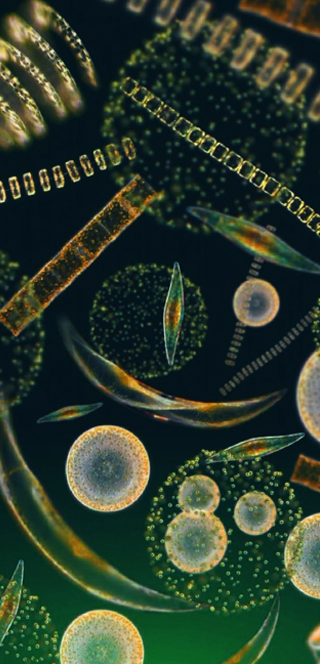

-
Plankton
Plankton is a diverse group of organisms that live in the ocean. Plankton are the diverse collection of organisms that live in large bodies of water and are unable to swim against a current. The individual organisms constituting plankton are called plankters. They provide a crucial source of food to many large aquatic organisms, such as fish and whales.
-

Phytoplankton
Phytoplankton are the autotrophic (self-feeding) components of the plankton community and a key part of oceans, seas and freshwater basin ecosystems.The name comes from the Greek words meaning "wanderer" or "drifter". Most phytoplankton are too small to be individually seen with the unaided eye.However, when present in high enough numbers, some varieties may be noticeable as colored patches on the water surface due to the presence of chlorophyll within their cells and accessory pigments (such as phycobiliproteins or xanthophylls) in some species.
-
Zooplankton
Zooplankton are heterotrophic (sometimes detritivorous) plankton (cf. phytoplankton).Plankton are organisms drifting in oceans, seas, and bodies of fresh water. Individual zooplankton are usually microscopic, but some (such as jellyfish) are larger and visible to the naked eye.